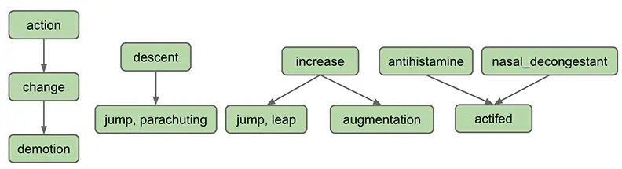
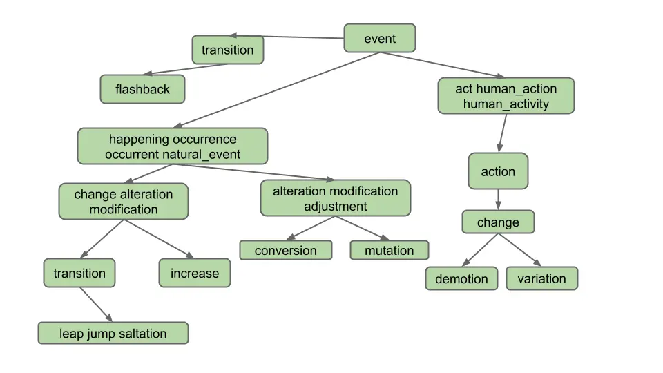
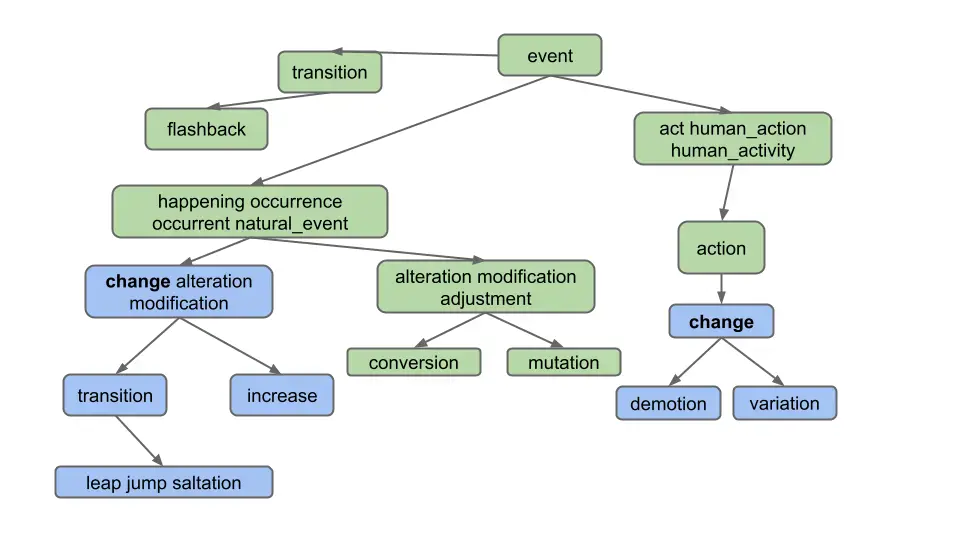
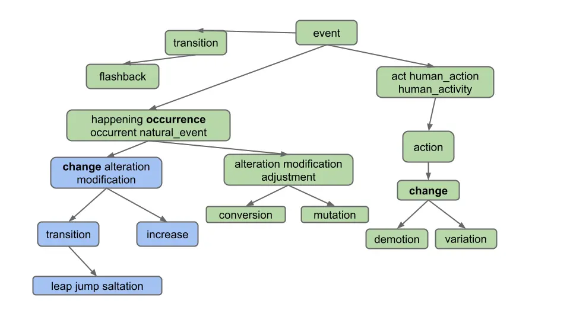
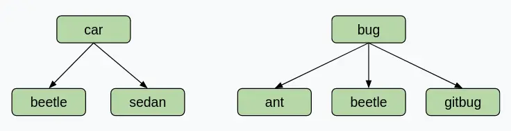

Project 4C: Wordnet (k==0)
Lectures needed for this project:
- Lecture 16 (Extends, Sets, Maps, and BSTs)
- Lectures 20, 21 (Graph Traversals and Implementations)
Partner policy: No partners. Discussing ideas with other students is allowed, but code sharing is not allowed, and the solutions you submit should be your own work! More details on the policies page.
In this project, we will continue building out the browser-based tool NGordnet by adding a new feature to return hyponyms within the WordNet dataset.
Here, you’ll complete part of your implementation to Wordnet by handling the k == 0 case and lists of
words.
Unlike Project 4A, the implementation for this part of the project is very open-ended. Deciding on an overall design is an important skill that we’ll also revisit in Project 5. The number of lines of code for this project isn’t necessarily large, but there are a lot of independent decisions that you’ll need to make along the way.
See below or click here for a video introduction to the project. Note that the video might have some slightly outdated sections.
Setup
Follow the Assignment Workflow Guide to get started with this assignment. This
starter code is in the proj4cd folder.
You’ll also need to download the Project 4 data files (they are around 150 MB, which is too large to be pushed to GitHub).
The data files in this assignment contain a new set of data files in addition to the ones from Project 4A.
Download the data files at this link.
You should unzip this file into the proj4 directory such that the
datafolder is at the same level as thesrcandstaticfolders.
Once you are done with this step, your proj4cd directory should look like this:
proj4cd
├── data
├── src
├── static
├── tests
You’ll notice that this skeleton is (almost) the exact same as the Project 4A skeleton. Project 4D uses the NGramMap class from Project 4A, which is why we have provided a placeholder implementation for it. This includes a working implementation of the countHistory method.
If you want to copy in your own NGramMap and TimeSeries from Project 4A, you can. However, we suggest only doing so after you get a full score on Project 4C and 4D, just in case your implementation has any subtle bugs in it.
You may have also noticed that the Plotter class and the other handlers are not in the skeleton. Since they depend on TimeSeries, if you want to use them, you’ll have to copy it in from Project 4A along with your TimeSeries implementation.
After importing library-fa25, the code in NGramMap.java should no longer be red.
Task 1: Dummy HyponymsHandler
- In your web browser, open the
ngordnet.htmlfile in thestaticfolder. As a refresher, you can find how to do that here. You’ll see that there is a new button: “Hyponyms”. Note that there is also a new input box calledk, though we won’t use this box until part D. - Try clicking the Hyponyms button. You’ll see nothing happens (and if you open the developer tools feature of your web browser, you’ll see that your browser shows an error).
In Project 4C and 4D, your primary objective is to implement this button, which will require reading in a different type of dataset and synthesizing the results with the dataset from Project 4A. Unlike 4A. it will be entirely up to you to decide what classes you need to support this task.
- Start by opening your
Main.javafile.- Create a new file called
HyponymsHandlerthat simply returns the word “Hello!” when the user clicks the Hyponyms button in the browser. You’ll need to create a newHyponymsHandlerclass that extends theNgordnetQueryHandlerclass. See your other Handler classes for examples. Make sure when you register your handler that you use the string “hyponyms” as the first argument to theregistermethod, and not “hyponym”.- Once you’ve modified
Mainso that your new handler is registered to handle hyponyms requests, start upMainand try clicking the Hyponyms button in your web browser again. You should see text appear that says “Hello”.
WordNet Dataset
Before we can incorporate WordNet into our project, we first need to understand the WordNet dataset.
WordNet is a “semantic lexicon for the English language” that is used extensively by computational linguists and cognitive scientists; for example, it was a key component in IBM’s Watson. WordNet groups words into sets of synonyms called synsets and describes semantic relationships between them.
One such relationship is the is-a relationship, which connects a hyponym (more specific synset) to a hypernym (more general synset). For example, “change” is a hypernym of “demotion”, since “demotion” is-a (type of) “change”. “change” is in turn a hyponym of “action”, since “change” is-a (type of) “action”. A visual depiction of some hyponym relationships in English is given below:

Each node in the graph above is a synset. Synsets consist of one or more words in English that all have the same meaning. For example, one synset is “jump, parachuting”, which represents the act of descending to the ground with a parachute. “jump, parachuting” is a hyponym of “descent”, since “jump, parachuting” is-a “descent”.
Words in English may belong to multiple synsets. This is just another way of saying words may have multiple meanings. For example, the word “jump” also belongs to the synset “jump, leap”, which represents the more figurative notion of jumping (e.g. a jump in attendance) rather the literal meaning of jump from the other synset (e.g. a jump over a puddle). The hypernym of the synset “jump, leap” is “increase”, since “jump, leap” is-an “increase”. Of course, there are other ways to “increase” something: for example, we can increase something through “augmentation,” and thus it is no surprise that we have an arrow pointing downwards from “increase” to “augmentation” in the diagram above.
Synsets may include not just words, but also what are known as collocations. You can think of these as single words that occur next to each other so often that they are considered a single word, e.g. “nasal_decongestant”. To avoid ambiguity, Wordnet represents the constituent words of collocations as being separated with an underscore _ instead of the usual convention in English of separating them with spaces. For simplicity, we will refer to collocations as simply “words” throughout this document.
A synset may be a hyponym of multiple synsets. For example, “actifed” is a hyponym of both “antihistamine” and “nasal_decongestant”, since “actifed” is both of these things.
Additional resources:
- Staff Solution Webpage: Useful for generating expected outputs for different test case inputs. Use this to write your unit tests!
- Wordnet Visualizer: Useful for visually understanding how synsets and hyponyms work and testing different words/lists of words for potential test case inputs. Click on the “?” bubbles to learn how to use the various features of this tool!
Hyponyms (Basic Case)
In the next 3 tasks, you’ll create a partial implementation of the Hyponyms button. For now, this button should:
- Assume that the “words” entered is only a single word.
- Ignore startYear, endYear, and k.
- Return a string representation of a list of the hyponyms of the single word, including the word itself. The list should be in alphabetical order, with no repeated words.
For example, suppose the WordNet dataset looks like the diagram below (given to you as the input files synsets_size11.txt
and hyponyms_size11.txt). Suppose that the user enters “descent” and clicks on the Hyponyms button.
In this case, the output of your handler should be the string representation of a list containing “descent”, “jump”
and “
parachuting”, i.e [descent, jump, parachuting]. Note that the words are in alphabetical order.
As another example, suppose we’re using a bigger dataset such as the one below (given to you as the input
files synsets_size16.txt and hyponyms_size16.txt):

Suppose the user enters “change” and clicks on the Hyponyms button. In this case, the hyponyms are all the words in the blue nodes in the diagram below:

That is the output
is [alteration, change, demotion, increase, jump, leap, modification, saltation, transition, variation]. Note that
even though “change” belongs to two different synsets, it only appears once.
Note: Don’t overthink this and make life harder than it needs to be. Specifically, observe that the output does not include:
- Synonyms of synonyms (e.g. does not include “adjustment”)
- Hyponyms of synonyms (e.g. does not include “conversion”)
- Hyponyms of other definitions of hyponyms (e.g. does not include “flashback”, which is a hyponym of another definition of “transition”)
In other words, solving this problem in the most straightforward way is good enough.
In the next few tasks, you will modify HyponymsHandler.java (and any helper classes) in order to implement the Hyponyms button.
To implement this button, you’ll need to decide what additional classes you need to create. Don’t do all the work in HyponymsHandler! Instead, you should have helper classes. For example, in Project 4A, we created an NGramMap class. You’ll want to do something similar.
In the next few tasks, we’ll suggest some steps you can take to tackle this problem, although you can organize your code in whatever way makes the most sense for your implementation.
Task 2: Graph Implementation
To get the Hyponyms button working, you’ll need some kind of implementation of a directed graph as described in lectures 20 and 21. We suggest starting this project by creating such an implementation.
Implement a directed graph to represent Wordnet.
This project is unlike any project earlier in the class. We won’t be grading your graph implementation, and we won’t even be telling you what to put into it. That’s your choice.
To decide what methods to include in your graph design, you’ll have to think ahead to how you’ll use it. This will require understanding the entire task described below.
You may also want additional helper classes/methods that represent the idea of a traversal, but this is not required - you can implement your traversal within your graph implementation as well.
For this project, you may not import any existing graph library into your code. Instead, you should build your own graph class or classes. Recall that you are not allowed to use LLMs for code generaton on this project!
Since you’re only going to be creating one implementation, there’s no need to define an interface. That is, rather than having a DirectedGraph interface with several implementations, e.g. AdjacencyMatrixDG and AdjacencyListDG, you should just write a class.
Testing
We suggest writing tests to ensure that your graph implementation is working as expected. Our solution has a class called TestGraph that evaluates various aspects of our implementation.
We recommend testing your graph methods with operations that are independent of the WordNet data. Granular tests will allow you to pinpoint whether a failing implementation is the result of an incorrect graph implementation, incorrect Wordnet data processing, or something else entirely. For example, if your implementation includes createNode or addEdge methods, confirm they yield an expected output separately from hyponyms and synset processing logic.
Task 3: Reading WordNet Dataset Files
WordNet File Format
We now describe the two types of data files that store the WordNet dataset. These files are in comma separated format, meaning that each line contains a sequence of fields, separated by commas.
-
File Type #1: List of noun synsets. The file
synsets_size82191.txt(and other smaller files withsynsetin the name) lists all the synsets in WordNet. The first field is the synset id (an integer), the second field is the synonym set (or synset), and the third field is its dictionary definition. For example, the line6829,Goofy,a cartoon character created by Walt Disneymeans that the synset
{ Goofy }has an id number of 6829, and its definition is “a cartoon character created by Walt Disney”. The individual nouns that comprise a synset are separated by spaces (and a synset element is not permitted to contain a space). The id numbers are useful because they also appear in the hyponym files, described as file type #2. -
File Type #2: List of hyponyms. The file
hyponyms_size82191.txt(and other smaller files with hyponym in the name) contains the hyponym relationships: The first field is a synset id; subsequent fields are the id numbers of the synset’s direct hyponyms. For example, the following line79537,38611,9007means that the synset 79537 (“viceroy vicereine”) has two hyponyms: 38611 (“exarch”) and 9007 (“Khedive”), representing that exarchs and Khedives are both types of viceroys (or vicereine). The synsets are obtained from the corresponding lines in the file
synsets.txt:79537,viceroy vicereine,governor of a country or province who rules... 38611,exarch,a viceroy who governed a large province in the Roman Empire 9007,Khedive,one of the Turkish viceroys who ruled Egypt between...There may be more than one line that starts with the same synset ID. For example, in
hyponyms_size16.txt, we have11,12 11,13This indicates that both synsets 12 and 13 are direct hyponyms of synset 11. These two could also have been combined on to one line, i.e. the line below would have the exact same meaning, namely that synsets 12 and 13 are direct hyponyms of synset 11.
11,12,13You might ask why there are two ways of specifying the same thing. Real world data is often messy, and we have to deal with it.
Parse the Wordnet data files and use your directed graph implementation to store the data.
Now that you have code for representing a graph in memory, the next step in building the Hyponyms button is writing code that converts the WordNet dataset files into a graph. This code could be a part of your graph implementation, or it could be a class or method that uses your graph implementation.
We recommend creating another class/method that reads in the WordNet dataset and constructs an instance of your directed graph implementation from Task 2. The section below (Design Tips) provides some tips for reading Wordnet dataset files.
Design Tips
The Hyponyms button involves having to do all sorts of different lookups, graph operations, and data processing operations. There is no one right way to do this.
Here are some example lookups that you might need to perform on the WordNet dataset:
- Given a word (e.g. “change”), what nodes contain that word?
- Example in synsets_size16.txt: change is in synsets 2 and 8
- Given an integer, what node goes with that index?
- Necessary for processing hyponyms.txt. For example in hyponyms16.txt, we know that the node with synset 8 points at synsets 9 and 10, so we need to be able to find node 8 to get its adjacency list.
- Given a node, what words are in that node?
- Example in synsets_size16.txt: synset 11 contains alteration, modification, and adjustment
Here are some example graph operations you might need to perform:
- Creating a node, e.g. each line of
synsets_size16.txtcontains the information for a node. - Adding edges between nodes node, e.g. each line of
hyponyms_size16.txtcontains one or more edges that should be added to the corresponding node. - Finding reachable nodes, e.g. the nodes reachable from node #7 in
hyponyms_size16.txtare 7, 8, 9, 10.
Your life will be a lot easier if you select instance variables for your classes that naturally help solve all six of the problems above.
Note: If you over-engineer and write methods that you end up not needing, that’s fine.
Just like NGramMap, you’ll want your helper classes to only parse the input files once. Do not create methods that have to read the entire Wordnet file every time they are called. This will be too slow!
Also, a reminder from Project 4A: Deeply nested generics are a warning sign that you are doing something too complicated. Either find a simpler way or create a helper class to help manage the complexity. For example, if you find yourself trying to use something like Map<Set<Set<..., you have started a walk down an unnecessarily difficult path.
If you have a design that is painful and with which you cannot make progress, don’t be afraid to delete your existing instance variables and try again. The hard part of this project is the design, not the programming. You can always use git to recover your old design if you decide you actually liked it.
Task 4: Traversing the WordNet Graph
Use an algorithm on your directed graph implementation to return the hyponyms of the query.
Now that you have a way to represent the WordNet dataset in memory, the last step in building the Hyponyms button is writing code that takes a word, and uses a graph traversal to find all hyponyms of that word in the given graph.
We recommend adding code to a WordNet class so that a WordNet object is able to take a word and return its hyponyms.
Design Tips
Here are some example data processing operations you might need in this task:
- Given a collection of things, how do you find all non-duplicate items? (Hint: There is a data structure that makes this very easy and efficient). Don’t be afraid to also search the internet for the data structure that you choose (e.g. if you choose to use a TreeMap for whatever reason, feel free to look up “TreeMap methods java”, “Map methods java”, or “Collection methods java”, etc).
- Given a collection of things, how do you sort them? (Hint: Google how to sort the collection that you’re using)
Writing Tests: WordNet
We recommend writing tests that evaluate queries on the examples above (for example, you might look at the hyponyms of “descent” in synsets_size11.txt and hypernyms_size11.txt, or the hyponyms of “change” in synsets_size16.txt and hypernyms_size16.txt.
For example, our code has a class called TestWordNet containing the function below.
@Test
public void testHyponymsSimple(){
WordNet wn=new WordNet("./data/synsets_size11.txt","./data/hyponyms_size11.txt");
assertThat(wn.hyponyms("antihistamine")).isEqualTo(Set.of("antihistamine","actifed"));
}
Note your WordNet class may not have the same functions as mine so the test shown will probably not work verbatim with your code. Note that our test does NOT use an NGramMap anywhere, nor is it using a HyponymHandler, nor is it directly invoking an object of type Graph. It is specifically tailored to testing the WordNet class.
Writing Tests: HyponymsHandler
We’ve provided you with a short unit test files for this task in the file tests/TestOneWordK0Hyponyms.java.
This file corresponds to tests for finding hyponyms of a single word, where k = 0.
This test file is not comprehensive! In fact, it only contains one basic test. You should fill this file with more unit tests.
If you need help figuring out what the expected outputs of your tests should be, you can use the staff solution webpage.
Testing in Browser
While you can (and should) write unit tests for the helper classes/methods that you create for this project, another good way to test and see what’s going on with your code is to simply run Main.java, open ngordnet.html, enter some inputs into the boxes, and click the “Hyponyms” button. You may find visual debugging can lead to some useful discoveries in this project.
For example, you can use the web front-end to check the two input examples (“descent” and “change”) from the diagrams above for synsets_size16.txt and hyponyms_size16.txt.
You can also run Main.java with the debugger to debug different inputs quickly. After clicking the “Hyponyms” button, your code will execute with the debugger - breakpoints will be triggered, you can use the variables window, etc.
Note: Relying on only browser tests will be incredibly frustrating (and slow!). Use your testing skills to build confidence in the foundational abstractions that you build (e.g. Graph, WordNet, etc.).
Debugging Tips
- Use the small input files while testing! This decreases the startup time to run
Main.javaand makes it easier to reason about the code. If you’re runningMain.java, these files are set in the first few lines of themainmethod. For unit tests, the file names are passed into thegetHyponymHandlermethod. - There are a lot of moving parts to this project. Don’t start by debugging line-by-line. Instead, narrow down which function/region of your code is not working correctly then search more closely in those lines.
- Because of the obfuscation that we applied to the Project 4A files (in particular, TimeSeries and NGramMap), the argument name previews when using these classes in IntelliJ may look a little weird. You may see long, random strings; these are intentional in order to obfuscate the code, and they do not represent an issue with your own code in any way.
Handling Lists of Words
Your next objective is to handle lists of words. As an example, if the user enters “change, occurrence” for the diagram below, we should only return common hyponyms of each word, i.e. [alteration, change, increase, jump, leap, modification, saltation, transition]. “Demotion” and “variation” are not included because they are not hyponyms of both words; specifically, they are not hyponyms of “occurrence”.

As you can see, we only want to return words which are hyponyms of ALL words in the list. Furthermore, note that the list of words provided by the user can include more than just 2 words, even though our examples in this spec do not.
Note that it is possible for two words to share hyponyms without necessarily sharing nodes. Take a look at this example. If the user enters “car, bug” for the diagram below, we should get [beetle], not [] (empty list)! This example shows that we are getting the intersection of words, not nodes.

For some more examples which demonstrate the usefulness of this feature, let’s say we are using the full synsets_size82191.txt and hyponyms_size82191.txt.
- Entering “video, recording” in the words box and clicking “Hyponyms” should display
[video, video_recording, videocassette, videotape], as these are all the words which are hyponyms of “video” and “recording”. - Entering “pastry, tart” in the words box and then clicking “Hyponyms” should display
[apple_tart, lobster_tart, quiche, quiche_Lorraine, tart, tartlet ].
Task 5: Lists of Words
Modify your
HyponymsHandlerand the rest of your implementation to deal with the List of Words case.
To test this part of your code, we recommend manually constructing examples using synsets_size16.txt and hyponyms_size16.txt and using the provided front end to evaluate correctness.
Writing Tests: HyponymsHandler
We’ve provided you with a short unit test files for this task in the file tests/TestMultiWordK0Hyponyms.java.
This file corresponds to tests for finding hyponyms of multiple words, where k=0 (e.g. gallery, bowl).
This test file is not comprehensive! In fact, it only contains one basic test. You should fill this file with more unit tests.
If you need help figuring out what the expected outputs of your tests should be, you can use the staff solution webpage.
Task 6: Autograder Buddy
Throughout this assignment, we’ve had you use your front end to test your code. Our grader is not sophisticated enough to pretend to be a web browser and call your code. Instead, we’ll need you to provide a method in the AutograderBuddy class that provides a handler that can deal with hyponyms requests.
When you ran git pull skeleton main at the start of this spec, you should have received a file called AutograderBuddy.java.
Open AutograderBuddy.java and fill in the getHyponymHandler method such that it returns a HyponymsHandler that uses the four given files. Your code here should be quite similar to your code in Main.java.
Now that you’ve created AutograderBuddy, you can submit to the autograder. If you fail any tests, you should be able to replicate them locally as Truth tests by building on the test files above. If any additional datafiles are needed, they will be added to this section as links.
Submission
Try submitting to the autograder. You may or may not pass everything.
- If you fail a correctness test, this means that there is a case that your local tests did not cover.
- The autograder will not run unless you fix all your style errors. Reminder that you can check style in IntelliJ as often as you’d like:

- You will have a token limit of 8 tokens every 24 hours. We will not reinstate tokens for failing to add/commit/push your code, run style, etc.
Project 4C will be worth 70 points.
Grading breakdown:
- HyponymHandler k == 0 Single Word (50%)
- HyponymHandler k == 0 Multi Word (50%)
The score you receive on Gradescope is your final score for this assignment (assuming you followed the collaboration policy).
The WordNet part of this assignment is loosely adapted from Alina Ene and Kevin Wayne’s Wordnet assignment at Princeton University.